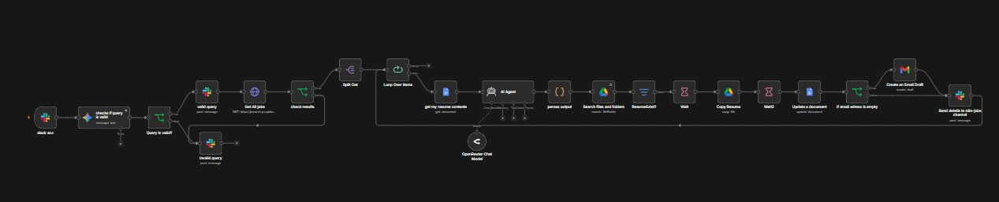

AI job scraper & custom output parser
the pipeline scrapes job listings, runs an AI agent to score them against my resume, and posts results to Slack. the part that took longest wasn't the scraping. it was that the AI kept returning malformed JSON, so i wrote a parser: strip markdown fences, try JSON.parse, fall back to regex, apply safe defaults if everything fails. that parser now lives in every AI workflow i build.
full writeup →